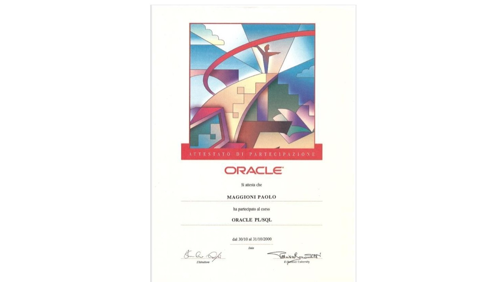
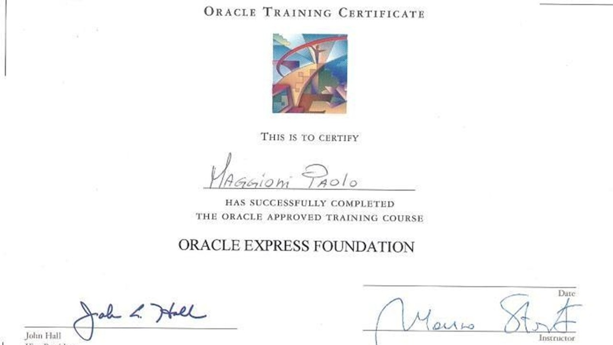
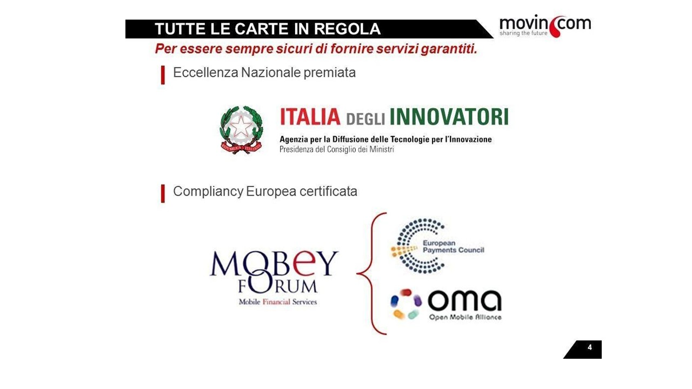

Professional Summary
Oracle database specialist with 20+ years of enterprise experience across PL/SQL development, data architecture, and performance optimization. Deep hands-on expertise in complex migrations, DWH engineering, and high-volume system tuning. Available for remote, technical roles — no management overhead, just solid database work.
(9i → 23c)
Major Migration
Last Migration
Technical Skills
Database Platforms
- Oracle 9i, 10g, 11g, 12c, 19c, 21c, 23c
- PostgreSQL (advanced)
- PL/SQL & PL/pgSQL
- SQL Developer, TOAD
Core Specializations
- Performance Tuning & Optimization
- Database Migration & Porting
- Data Modeling & Architecture
- ETL / DWH Development
Domain Knowledge
- Energy & Gas Utility Systems
- Financial & Payment Systems
- Logistics & Supply Chain
- Public Administration
Tools & Other
- Oracle Forms & Reports
- Oracle Portal, Discoverer
- SAP Integration
- English B1/B2 · French A1/A2
Professional Experience
Client: Major Energy Sector Companies — Enterprise DWH Migration
- Autonomous PostgreSQL → Oracle migration of two mission-critical platforms (EE & NG)
- 100% data integrity, zero downtime throughout transition
- DWH migration to Oracle 23c with advanced partitioning strategies
- ETL redesign for performance at billion-record scale
- Custom PL/pgSQL → PL/SQL conversion framework
- Ported DWH applications from Oracle 12c to PostgreSQL
- Migration scripts, data integrity validation, performance tuning
- Oracle Forms applications for logistics management
- PL/SQL procedures for supply chain optimization
- Warehouse management system maintenance and enhancement
Focus: Energy & Gas Utility Management
- Complete data flow management for primary gas & electric utilities
- Performance tuning for large-scale operations (high record volumes)
- Database installations and updates for new clients
- Payment platform integration consulting
- System integration strategy advisory
- Oracle PL/SQL courses for European certification
- Student preparation for Oracle certification exams
- Database design and architecture for enterprise applications
- PL/SQL development and performance optimization
Lead architect of Italy's first mobile payment platform — designed and built the entire Oracle-based backend infrastructure processing millions of monthly transactions.
- Complete Oracle payment infrastructure design (Oracle 11g/12c)
- 100 Oracle Forms screens + Oracle Reports reporting layer
- PSD1/PSD2 compliance, 3-factor auth, 3DSecureCode implementation
- QR code payment systems — pioneered for utilities, transport, fuel
- Integrations: Trenitalia, Tamoil, CTM Cagliari, RadioTaxi 5730 Turin
🔗 AIM Energy Vicenza · 🔗 Trenitalia · 🔗 RadioTaxi Turin
Oracle consulting for government agencies and financial sector — DWH design, performance tuning, data modeling.
Extensive Oracle development and DBA work across multiple FIAT divisions — logistics, finance, warranty, supplier management. Projects included database design (~400 tables), Oracle Forms/Reports/Portal, SAP integration, and IAS39 compliance systems.
Certifications & Recognition
- ✦ Oracle PL/SQL Certified Developer
- ✦ Oracle Express Foundation Certificate
- ✦ European PSD2 Compliance — Mobile Wallet Systems
- ✦ "Italia degli Innovatori" — Prime Minister's Office, National Digital Innovation Award



Current Availability
OPEN TO REMOTE · PART-TIME · PROJECT-BASED
- Oracle PL/SQL development and stored procedure engineering
- Database migration and porting (Oracle ↔ PostgreSQL)
- Performance tuning for high-volume enterprise systems
- DWH / ETL architecture and optimization
- Application DBA support for energy, finance, logistics sectors
Professional References
"What I strongly appreciated working with Paolo was something not so easy to meet in a technical person: a good balance between passion and desire for innovation and a pragmatic approach big projects require to reach deadlines."
"Paolo showed incredible technical skills mixed with sales and creative vision. He was a key player and I absolutely recommend him."
"In every situation he showed high skills, team management and proactivity. It was a pleasure to work with him."
"The reliability of the platform, the growth of his collaborators, and the solid reputation among partners and clients testify to his value."